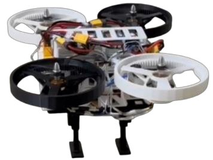
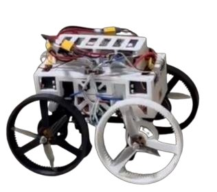
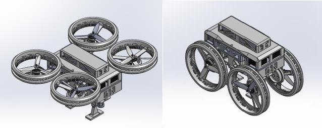
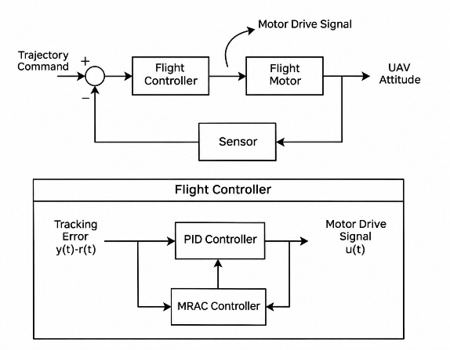
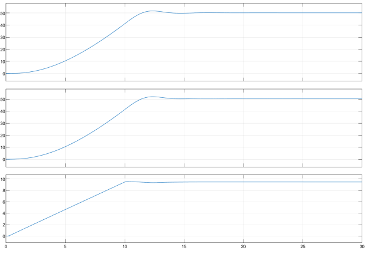
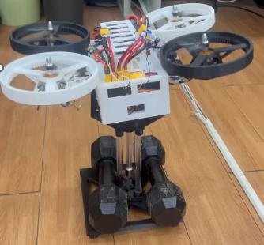
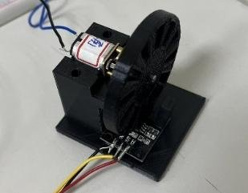

A UAV that can only fly gets stuck in narrow alleys, cluttered rooms or partly collapsed buildings. We built a vehicle that both flies and drives. When a space is too tight to fly through, it lands, crosses on wheels and takes off again, so a search does not have to stop.
I set the development roadmap and designed the transformable mechanism. I designed all of our test rigs: the thrust rig, the motor-speed rig and the universal-joint flight platform. I built the ground-mode Simulink model and the mathematical flight model on my own, and modeled the flight attitude dynamics with a teammate. I also did all of the FPGA work and gave the oral presentation at iFUZZY & FUZZY 2025.
Each arm carries both a propeller and a wheel. One servo per arm rotates it between the two configurations, which saves weight compared with two-servo designs. A slider-crank support lifts the body during the change, so the arms do not carry the full load. FEA on the wheel and the arm confirmed both could carry the vehicle.

I modeled each drive motor with its voltage and torque equations and fed in speed curves measured on our test rig. A tire slip model turns wheel speed into ground force, so the Simulink model reproduces slip, turning and sudden braking. Speed commands from this model went straight into the STM32 ground-drive code.
The vehicle's mass is not evenly distributed. PID gains tuned for one attitude made the response diverge or converge too slowly once the attitude changed, so we used model-reference adaptive control (MRAC) to tune the gains online. The CAD-based model was too slow to iterate on, so I rebuilt the flight dynamics as a mathematical model. In simulation, the x and y positions settled in about 3 s.




Next step: because of the uneven weight distribution, the controller still needs more tuning before free flight.